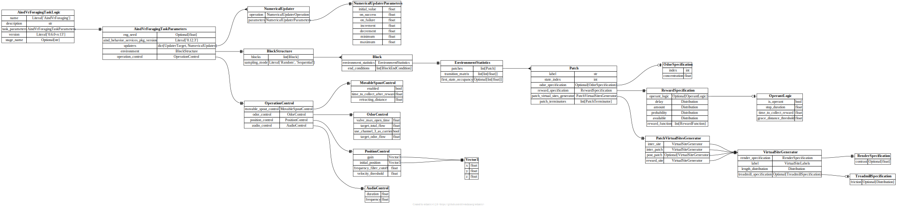

api.task_logic¶
{kind=link}
- pydantic model aind_behavior_vr_foraging.task_logic.AindVrForagingTaskLogic[source]¶
Bases:
AindBehaviorTaskLogicModelMain task logic model for the AIND VR Foraging task.
This is the top-level class that encapsulates the complete task logic specification for the virtual reality foraging behavioral experiment. It includes all task parameters, environment specifications, and control settings.
- Config:
extra: str = forbid
validate_assignment: bool = True
validate_default: bool = True
strict: bool = True
str_strip_whitespace: bool = True
- Fields:
- Validators:
coerce_version»version
- field task_parameters: AindVrForagingTaskParameters [Required][source]¶
Parameters of the task logic
- pydantic model aind_behavior_vr_foraging.task_logic.AindVrForagingTaskParameters[source]¶
Bases:
TaskParametersComplete parameter specification for the AIND VR Foraging task.
This class contains all configurable parameters for the VR foraging task, including environment structure, task mode settings, operation control, and numerical updaters for dynamic parameter modification.
- Config:
extra: str = allow
validate_assignment: bool = True
validate_default: bool = True
strict: bool = True
str_strip_whitespace: bool = True
- Fields:
- Validators:
- field environment: BlockStructure [Required][source]¶
Statistics of the environment
- field operation_control: OperationControl [Required][source]¶
Control of the operation
- field updaters: Dict[UpdaterTarget, NumericalUpdater] [Optional][source]¶
Look-up table for numeric updaters
- pydantic model aind_behavior_vr_foraging.task_logic.AudioControl[source]¶
Bases:
BaseModelControls audio feedback parameters for the task.
This class manages audio cue generation including tone duration and frequency for auditory feedback during the behavioral task.
- Fields:
- pydantic model aind_behavior_vr_foraging.task_logic.Block[source]¶
Bases:
BaseModelConfiguration for a single experimental block.
A block represents a period of the experiment with specific environment statistics and ending conditions. Each block defines the environmental parameters and termination criteria for that experimental phase.
- Fields:
- field end_conditions: List[BlockEndCondition] = [][source]¶
List of end conditions that must be true for the block to end.
- field environment_statistics: EnvironmentStatistics [Required][source]¶
Statistics of the environment
- pydantic model aind_behavior_vr_foraging.task_logic.BlockEndConditionChoice[source]¶
Bases:
_BlockEndConditionBaseBlock end condition based on number of choices made.
This condition ends a block after the animal has made a specified number of choices (e.g., patch visits or reward attempts).
- pydantic model aind_behavior_vr_foraging.task_logic.BlockEndConditionDistance[source]¶
Bases:
_BlockEndConditionBaseBlock end condition based on distance traveled.
This condition ends a block after the animal has traveled a specified distance.
- pydantic model aind_behavior_vr_foraging.task_logic.BlockEndConditionDuration[source]¶
Bases:
_BlockEndConditionBaseBlock end condition based on time duration.
This condition ends a block after a specified amount of time has elapsed.
- pydantic model aind_behavior_vr_foraging.task_logic.BlockEndConditionPatchCount[source]¶
Bases:
_BlockEndConditionBaseBlock end condition based on number of patches visited.
This condition ends a block after the animal has visited a specified number of unique patches.
- pydantic model aind_behavior_vr_foraging.task_logic.BlockEndConditionReward[source]¶
Bases:
_BlockEndConditionBaseBlock end condition based on number of rewards obtained.
This condition ends a block after the animal has obtained a specified number of rewards.
- pydantic model aind_behavior_vr_foraging.task_logic.BlockStructure[source]¶
Bases:
BaseModelStructure defining the sequence and sampling of experimental blocks.
This class manages multiple experimental blocks and determines how they are presented during the experiment (sequentially or randomly).
- Fields:
- pydantic model aind_behavior_vr_foraging.task_logic.ClampedMultiplicativeRateFunction[source]¶
Bases:
_PatchUpdateFunctionA patch update function that applies multiplicative rate updates with bounds.
Update in the form of x = clamp(x * rate ** tick_value). This function multiplies the current value by the rate parameter, maintaining the result within specified minimum and maximum bounds. Useful for percentage- based changes and exponential decay/growth patterns.
- Fields:
- pydantic model aind_behavior_vr_foraging.task_logic.ClampedRateFunction[source]¶
Bases:
_PatchUpdateFunctionA patch update function that applies a clamped rate-based update.
Update in the form of x = clamp(x + rate * tick_value). This function updates values at a specified rate while keeping results within defined minimum and maximum bounds. The rate is applied per rule unit (e.g., time, distance, choices).
- Fields:
- pydantic model aind_behavior_vr_foraging.task_logic.CtcmFunction[source]¶
Bases:
_PatchUpdateFunctionA patch update function that uses a continuous-time Markov chain (CTMC) to determine patch updates based on a transition probability matrix.
It expects a transition matrix that takes the current value of the variable of interest (e.g. Probability), and outputs a new value based on the defined stochastic process in the transition matrix.
- Fields:
- Validators:
- field transition_matrix: List[List[Annotated[float, Ge(ge=0)]]] [Required][source]¶
Transition matrix between states
- Validated by:
- validator validate_transition_matrix » transition_matrix[source]¶
Ensures matrix is of valid format and normalized to 1 within rows
- pydantic model aind_behavior_vr_foraging.task_logic.EnvironmentStatistics[source]¶
Bases:
BaseModelDefines the statistical properties of the foraging environment.
This class specifies the patches available in the environment, their transition probabilities, and initial state occupancy. It forms the core specification for the foraging environment structure.
- Fields:
- Validators:
_validate_transition_matrix»transition_matrix
- pydantic model aind_behavior_vr_foraging.task_logic.LookupTableFunction[source]¶
Bases:
_PatchUpdateFunctionA patch update function that uses lookup table interpolation.
Update in the form of x = lut_values[lerp(lut_keys, lut_values, tick_value)]. This function maps input values to output values using a lookup table with linear interpolation between defined points. Useful for complex, non-linear reward schedules or parameter updates.
- Fields:
- Validators:
_validate_lut»all fields
- field function_type: Literal['LookupTableFunction'] = 'LookupTableFunction'[source]¶
- Validated by:
_validate_lut
- pydantic model aind_behavior_vr_foraging.task_logic.MovableSpoutControl[source]¶
Bases:
BaseModelControls the movable water spout behavior for reward delivery.
This class configures how the movable spout operates, including when it’s enabled, timing for reward collection, and retraction distance for operant conditioning protocols.
- pydantic model aind_behavior_vr_foraging.task_logic.NumericalUpdater[source]¶
Bases:
BaseModelA numerical updater that modifies task parameters during execution.
This class combines an operation type with parameters to define how values should be updated dynamically during the task, enabling adaptive behavior based on animal performance or other criteria.
- Fields:
- field operation: NumericalUpdaterOperation = NumericalUpdaterOperation.NONE[source]¶
Operation to perform on the parameter
- field parameters: NumericalUpdaterParameters = NumericalUpdaterParameters(initial_value=0.0, on_success=0.0, on_failure=0.0, increment=0.0, decrement=0.0, minimum=0.0, maximum=0.0)[source]¶
Parameters of the updater
- class aind_behavior_vr_foraging.task_logic.NumericalUpdaterOperation(*values)[source]¶
Bases:
str,EnumEnumeration of operations that can be performed by numerical updaters.
These operations define how parameter values are modified during task execution, allowing for dynamic adjustment of task parameters based on performance or other criteria.
- pydantic model aind_behavior_vr_foraging.task_logic.NumericalUpdaterParameters[source]¶
Bases:
BaseModelParameters that control how numerical updates are applied to task values.
These parameters define the bounds and increments for updating numerical values during task execution, ensuring values stay within acceptable ranges.
- Fields:
- Validators:
_ensure_backwards_compatibility»all fields_ensure_backwards_compatibility_after»all fields
- field initial_value: float = 0.0[source]¶
Initial value of the parameter
- Validated by:
_ensure_backwards_compatibility_ensure_backwards_compatibility_after
- field maximum: float = 0.0[source]¶
Minimum value of the parameter
- Validated by:
_ensure_backwards_compatibility_ensure_backwards_compatibility_after
- field minimum: float = 0.0[source]¶
Minimum value of the parameter
- Validated by:
_ensure_backwards_compatibility_ensure_backwards_compatibility_after
- field on_failure: float = 0.0[source]¶
Value used to update the parameter by on failure
- Validated by:
_ensure_backwards_compatibility_ensure_backwards_compatibility_after
- field on_success: float = 0.0[source]¶
Value used to update the parameter by on success
- Validated by:
_ensure_backwards_compatibility_ensure_backwards_compatibility_after
- decrement: float[source]¶
Read-only data descriptor used to emit a runtime deprecation warning before accessing a deprecated field.
- pydantic model aind_behavior_vr_foraging.task_logic.OdorControl[source]¶
Bases:
BaseModelControls the odor delivery system parameters.
This class manages the olfactory stimulus delivery system, including flow rates, valve timing, and carrier gas configuration. It ensures proper odor concentration and delivery timing for the behavioral task.
- Fields:
- field target_odor_flow: float = 100[source]¶
Target odor flow (ml/s) in the odor mixture
- Constraints:
ge = 0
le = 100
- pydantic model aind_behavior_vr_foraging.task_logic.OdorSpecification[source]¶
Bases:
BaseModelSpecifies odor delivery parameters for olfactory cues in the VR environment.
Odors can be delivered at specific locations to provide additional sensory information for navigation and foraging decisions.
- Fields:
- pydantic model aind_behavior_vr_foraging.task_logic.OnThisPatchEntryRewardFunction[source]¶
Bases:
_RewardFunctionA RewardFunction that is applied when the animal enters the patch.
- Fields:
- pydantic model aind_behavior_vr_foraging.task_logic.OperantLogic[source]¶
Bases:
BaseModelDefines operant conditioning logic for reward delivery in the VR foraging task.
This class controls when and how rewards are delivered based on animal behavior, implementing stopping requirements, collection timeouts, and spatial constraints.
- Fields:
- field grace_distance_threshold: float = 10[source]¶
Virtual distance (cm) the animal must be within to not abort the current choice
- Constraints:
ge = 0
- field stop_duration: Distribution = Scalar(family=<DistributionFamily.SCALAR: 'Scalar'>, distribution_parameters=ScalarDistributionParameter(family=<DistributionFamily.SCALAR: 'Scalar'>, value=0.0), truncation_parameters=None, scaling_parameters=None)[source]¶
Duration (s) the animal must stop for to lock its choice
- pydantic model aind_behavior_vr_foraging.task_logic.OperationControl[source]¶
Bases:
BaseModelMaster control class for all operational hardware systems.
This class aggregates all the hardware control specifications including movable spout, odor delivery, position tracking, and audio systems. It provides a centralized configuration point for all task hardware.
- Fields:
- field audio_control: AudioControl = AudioControl(duration=0.2, frequency=1000)[source]¶
Control of the audio
- field movable_spout_control: MovableSpoutControl = MovableSpoutControl(enabled=False, time_to_collect_after_reward=1, retracting_distance=0)[source]¶
Control of the movable spout
- field odor_control: OdorControl = OdorControl(valve_max_open_time=10, target_total_flow=1000, use_channel_3_as_carrier=True, target_odor_flow=100)[source]¶
Control of the odor
- field position_control: PositionControl = PositionControl(gain=Vector3(x=1.0, y=1.0, z=1.0), initial_position=Vector3(x=0.0, y=2.56, z=0.0), frequency_filter_cutoff=0.5, velocity_threshold=1)[source]¶
Control of the position
- pydantic model aind_behavior_vr_foraging.task_logic.OutsideRewardFunction[source]¶
Bases:
_RewardFunctionA RewardFunction that is applied when the animal is outside of the patch.
- Fields:
- pydantic model aind_behavior_vr_foraging.task_logic.Patch[source]¶
Bases:
BaseModelRepresents statistics for a patch in the VR foraging task.
- Fields:
- field odor_specification: OdorSpecification | None = None[source]¶
The optional odor specification of the patch
- field patch_terminators: List[PatchTerminator] = [PatchTerminatorOnRejection(terminator_type='OnRejection', count=Scalar(family=<DistributionFamily.SCALAR: 'Scalar'>, distribution_parameters=ScalarDistributionParameter(family=<DistributionFamily.SCALAR: 'Scalar'>, value=1.0), truncation_parameters=None, scaling_parameters=None))][source]¶
The optional termination specification of the patch
- field patch_virtual_sites_generator: PatchVirtualSitesGenerator = PatchVirtualSitesGenerator(inter_site=VirtualSiteGenerator(render_specification=RenderSpecification(contrast=None), label=<VirtualSiteLabels.INTERSITE: 'InterSite'>, length_distribution=Scalar(family=<DistributionFamily.SCALAR: 'Scalar'>, distribution_parameters=ScalarDistributionParameter(family=<DistributionFamily.SCALAR: 'Scalar'>, value=20.0), truncation_parameters=None, scaling_parameters=None), treadmill_specification=None), inter_patch=VirtualSiteGenerator(render_specification=RenderSpecification(contrast=None), label=<VirtualSiteLabels.INTERPATCH: 'InterPatch'>, length_distribution=Scalar(family=<DistributionFamily.SCALAR: 'Scalar'>, distribution_parameters=ScalarDistributionParameter(family=<DistributionFamily.SCALAR: 'Scalar'>, value=20.0), truncation_parameters=None, scaling_parameters=None), treadmill_specification=None), post_patch=None, reward_site=VirtualSiteGenerator(render_specification=RenderSpecification(contrast=None), label=<VirtualSiteLabels.REWARDSITE: 'RewardSite'>, length_distribution=Scalar(family=<DistributionFamily.SCALAR: 'Scalar'>, distribution_parameters=ScalarDistributionParameter(family=<DistributionFamily.SCALAR: 'Scalar'>, value=20.0), truncation_parameters=None, scaling_parameters=None), treadmill_specification=None))[source]¶
Virtual site generation specification
- field reward_specification: RewardSpecification = RewardSpecification(operant_logic=None, delay=Scalar(family=<DistributionFamily.SCALAR: 'Scalar'>, distribution_parameters=ScalarDistributionParameter(family=<DistributionFamily.SCALAR: 'Scalar'>, value=0.0), truncation_parameters=None, scaling_parameters=None), amount=Scalar(family=<DistributionFamily.SCALAR: 'Scalar'>, distribution_parameters=ScalarDistributionParameter(family=<DistributionFamily.SCALAR: 'Scalar'>, value=5.0), truncation_parameters=None, scaling_parameters=None), probability=Scalar(family=<DistributionFamily.SCALAR: 'Scalar'>, distribution_parameters=ScalarDistributionParameter(family=<DistributionFamily.SCALAR: 'Scalar'>, value=1.0), truncation_parameters=None, scaling_parameters=None), available=Scalar(family=<DistributionFamily.SCALAR: 'Scalar'>, distribution_parameters=ScalarDistributionParameter(family=<DistributionFamily.SCALAR: 'Scalar'>, value=5.0), truncation_parameters=None, scaling_parameters=None), reward_function=[])[source]¶
The optional reward specification of the patch
- pydantic model aind_behavior_vr_foraging.task_logic.PatchRewardFunction[source]¶
Bases:
_RewardFunctionA RewardFunction that is applied when the animal is inside the patch. For the purposes of this function post-patch and inter-patch are excluded.
- Fields:
- field rule: Literal[RewardFunctionRule.ON_REWARD, RewardFunctionRule.ON_CHOICE, RewardFunctionRule.ON_TIME, RewardFunctionRule.ON_DISTANCE, RewardFunctionRule.ON_CHOICE_ACCUMULATED, RewardFunctionRule.ON_REWARD_ACCUMULATED, RewardFunctionRule.ON_TIME_ACCUMULATED, RewardFunctionRule.ON_DISTANCE_ACCUMULATED] = RewardFunctionRule.ON_REWARD[source]¶
Rule to trigger reward function
- pydantic model aind_behavior_vr_foraging.task_logic.PatchTerminatorOnChoice[source]¶
Bases:
_PatchTerminatorTerminates the patch after “count” choices.
- field count: Distribution = Scalar(family=<DistributionFamily.SCALAR: 'Scalar'>, distribution_parameters=ScalarDistributionParameter(family=<DistributionFamily.SCALAR: 'Scalar'>, value=1.0), truncation_parameters=None, scaling_parameters=None)[source]¶
Number of choices the animal must make to terminate the patch
- pydantic model aind_behavior_vr_foraging.task_logic.PatchTerminatorOnDistance[source]¶
Bases:
_PatchTerminatorTerminates the patch after a “count” distance.
- pydantic model aind_behavior_vr_foraging.task_logic.PatchTerminatorOnRejection[source]¶
Bases:
_PatchTerminatorTerminates the patch after a reward site where the animal does not stop in “count” reward sites.
- field count: Distribution = Scalar(family=<DistributionFamily.SCALAR: 'Scalar'>, distribution_parameters=ScalarDistributionParameter(family=<DistributionFamily.SCALAR: 'Scalar'>, value=1.0), truncation_parameters=None, scaling_parameters=None)[source]¶
Number of reward sites the animal must not stop in to terminate the patch
- pydantic model aind_behavior_vr_foraging.task_logic.PatchTerminatorOnReward[source]¶
Bases:
_PatchTerminatorTerminates the patch after “count” rewards.
- field count: Distribution = Scalar(family=<DistributionFamily.SCALAR: 'Scalar'>, distribution_parameters=ScalarDistributionParameter(family=<DistributionFamily.SCALAR: 'Scalar'>, value=1.0), truncation_parameters=None, scaling_parameters=None)[source]¶
Number of rewards the animal must collect to terminate the patch
- pydantic model aind_behavior_vr_foraging.task_logic.PatchTerminatorOnTime[source]¶
Bases:
_PatchTerminatorTerminates the patch after a “count” seconds.
- pydantic model aind_behavior_vr_foraging.task_logic.PatchVirtualSitesGenerator[source]¶
Bases:
BaseModelDefines the generation specifications for all virtual site types within a patch.
This class contains generators for all the different types of virtual sites that can appear within a patch environment. Each generator defines how sites of that type should be created with their properties and distributions.
- Fields:
- field inter_patch: VirtualSiteGenerator = VirtualSiteGenerator(render_specification=RenderSpecification(contrast=None), label=<VirtualSiteLabels.INTERPATCH: 'InterPatch'>, length_distribution=Scalar(family=<DistributionFamily.SCALAR: 'Scalar'>, distribution_parameters=ScalarDistributionParameter(family=<DistributionFamily.SCALAR: 'Scalar'>, value=20.0), truncation_parameters=None, scaling_parameters=None), treadmill_specification=None)[source]¶
Generator of the inter-patch virtual sites
- field inter_site: VirtualSiteGenerator = VirtualSiteGenerator(render_specification=RenderSpecification(contrast=None), label=<VirtualSiteLabels.INTERSITE: 'InterSite'>, length_distribution=Scalar(family=<DistributionFamily.SCALAR: 'Scalar'>, distribution_parameters=ScalarDistributionParameter(family=<DistributionFamily.SCALAR: 'Scalar'>, value=20.0), truncation_parameters=None, scaling_parameters=None), treadmill_specification=None)[source]¶
Generator of the inter-site virtual sites
- field post_patch: VirtualSiteGenerator | None = None[source]¶
Generator of the post-patch virtual sites
- field reward_site: VirtualSiteGenerator = VirtualSiteGenerator(render_specification=RenderSpecification(contrast=None), label=<VirtualSiteLabels.REWARDSITE: 'RewardSite'>, length_distribution=Scalar(family=<DistributionFamily.SCALAR: 'Scalar'>, distribution_parameters=ScalarDistributionParameter(family=<DistributionFamily.SCALAR: 'Scalar'>, value=20.0), truncation_parameters=None, scaling_parameters=None), treadmill_specification=None)[source]¶
Generator of the reward-site virtual sites
- pydantic model aind_behavior_vr_foraging.task_logic.PersistentRewardFunction[source]¶
Bases:
_RewardFunctionA RewardFunction that is always active.
- Fields:
- field rule: Literal[RewardFunctionRule.ON_REWARD, RewardFunctionRule.ON_CHOICE, RewardFunctionRule.ON_TIME, RewardFunctionRule.ON_DISTANCE, RewardFunctionRule.ON_CHOICE_ACCUMULATED, RewardFunctionRule.ON_REWARD_ACCUMULATED, RewardFunctionRule.ON_TIME_ACCUMULATED, RewardFunctionRule.ON_DISTANCE_ACCUMULATED, RewardFunctionRule.ON_PATCH_ENTRY] [Required][source]¶
- pydantic model aind_behavior_vr_foraging.task_logic.PositionControl[source]¶
Bases:
BaseModelControls the position tracking and movement detection parameters.
This class manages the position control system including coordinate transformations, initial positioning, signal filtering, and movement detection thresholds for the virtual reality foraging task.
- Fields:
- field frequency_filter_cutoff: float = 0.5[source]¶
Cutoff frequency (Hz) of the low-pass filter used to filter the velocity signal.
- Constraints:
ge = 0
le = 100
- pydantic model aind_behavior_vr_foraging.task_logic.RenderSpecification[source]¶
Bases:
BaseModelDefines visual rendering properties for virtual environment elements.
This class controls the visual appearance of virtual sites, including contrast and other visual parameters that affect how elements are rendered in the VR environment.
- Fields:
- class aind_behavior_vr_foraging.task_logic.RewardFunctionRule(*values)[source]¶
Bases:
str,EnumEnumeration of rules that trigger reward function updates.
These rules define when and how reward replenishment occurs, with different triggers based on animal behavior, time passage, or spatial navigation.
- pydantic model aind_behavior_vr_foraging.task_logic.RewardSpecification[source]¶
Bases:
BaseModelSpecifies reward parameters and behavior for a patch.
This class defines all aspects of reward delivery including amounts, probabilities, delays, operant logic, and dynamic update functions. It serves as the complete specification for how rewards are managed in a given Patch.
- Fields:
- field amount: Distribution = Scalar(family=<DistributionFamily.SCALAR: 'Scalar'>, distribution_parameters=ScalarDistributionParameter(family=<DistributionFamily.SCALAR: 'Scalar'>, value=5.0), truncation_parameters=None, scaling_parameters=None)[source]¶
Initial amount of reward in microliters
- field available: Distribution = Scalar(family=<DistributionFamily.SCALAR: 'Scalar'>, distribution_parameters=ScalarDistributionParameter(family=<DistributionFamily.SCALAR: 'Scalar'>, value=5.0), truncation_parameters=None, scaling_parameters=None)[source]¶
Initial amount of reward available in the patch in microliters
- field delay: Distribution = Scalar(family=<DistributionFamily.SCALAR: 'Scalar'>, distribution_parameters=ScalarDistributionParameter(family=<DistributionFamily.SCALAR: 'Scalar'>, value=0.0), truncation_parameters=None, scaling_parameters=None)[source]¶
The optional distribution where the delay to reward will be drawn from
- field operant_logic: OperantLogic | None = None[source]¶
The optional operant logic of the reward
- pydantic model aind_behavior_vr_foraging.task_logic.SetValueFunction[source]¶
Bases:
_PatchUpdateFunctionA patch update function that sets the target to a specific value.
Update in the form of x = value. This function directly sets the target parameter to a value drawn from the specified distribution, ignoring the current value. Useful for resetting parameters or applying discrete changes.
- pydantic model aind_behavior_vr_foraging.task_logic.Size[source]¶
Bases:
BaseModelRepresents 2D dimensions with width and height.
Used for defining texture sizes, corridor dimensions, and other 2D measurements in the VR foraging environment.
- Fields:
- pydantic model aind_behavior_vr_foraging.task_logic.Texture[source]¶
Bases:
BaseModelDefines visual texture properties for VR environment surfaces.
Textures are applied to walls, floors, and other surfaces in the virtual environment to provide visual cues and context for the foraging task.
Texture name must correspond to a valid texture asset loaded in the workflow.
- pydantic model aind_behavior_vr_foraging.task_logic.TreadmillSpecification[source]¶
Bases:
BaseModelDefines treadmill friction properties for virtual sites.
This class controls the friction experienced by the animal when moving through different virtual sites, allowing for varied locomotion dynamics across different regions of the environment.
- Fields:
- class aind_behavior_vr_foraging.task_logic.UpdaterTarget(*values)[source]¶
Bases:
str,EnumEnumeration of parameters that can be targeted by numerical updaters.
These targets define which task parameters can be dynamically modified during task execution to adapt to animal performance or experimental needs.
- pydantic model aind_behavior_vr_foraging.task_logic.Vector2[source]¶
Bases:
BaseModelRepresents a 2D point or vector with x and y coordinates.
Used for positioning elements in 2D space within the VR environment, such as texture coordinates or 2D movement vectors.
- pydantic model aind_behavior_vr_foraging.task_logic.Vector3[source]¶
Bases:
BaseModelRepresents a 3D point or vector with x, y, and z coordinates.
Used for 3D positioning and movement in the virtual reality environment, including camera positions, object locations, and 3D transformations.
- pydantic model aind_behavior_vr_foraging.task_logic.VirtualSite[source]¶
Bases:
BaseModelTHIS CLASS IS NOT MEANT TO BE DIRECTLY INSTANTIATED. Represents a specific virtual site instance in the VR environment.
This class defines a concrete virtual site with specific properties like position, length, and associated specifications. It is typically generated from VirtualSiteGenerator templates rather than being directly instantiated in the DSL.
Note: This class is primarily used internally for runtime site generation and is not meant to be directly instantiated in task configuration DSL.
- Fields:
label (aind_behavior_vr_foraging.task_logic.VirtualSiteLabels)odor_specification (aind_behavior_vr_foraging.task_logic.OdorSpecification | None)render_specification (aind_behavior_vr_foraging.task_logic.RenderSpecification)reward_specification (aind_behavior_vr_foraging.task_logic.VirtualSiteRewardSpecification | None)treadmill_specification (aind_behavior_vr_foraging.task_logic.TreadmillSpecification | None)
- field label: VirtualSiteLabels = VirtualSiteLabels.UNSPECIFIED[source]¶
Label of the virtual site
- field odor_specification: OdorSpecification | None = None[source]¶
The optional odor specification of the virtual site
- field render_specification: RenderSpecification = RenderSpecification(contrast=None)[source]¶
The optional render specification of the virtual site
- field reward_specification: VirtualSiteRewardSpecification | None = None[source]¶
The optional reward specification of the virtual site
- field start_position: float = 0[source]¶
Start position of the virtual site (cm)
- Constraints:
ge = 0
- field treadmill_specification: TreadmillSpecification | None = None[source]¶
Treadmill specification
- pydantic model aind_behavior_vr_foraging.task_logic.VirtualSiteGenerator[source]¶
Bases:
BaseModelGenerates virtual site specifications with randomized properties.
This class defines templates for creating virtual sites with variable properties like length and rendering specifications. It’s used to generate diverse virtual environments for the foraging task.
- Fields:
- field label: VirtualSiteLabels = VirtualSiteLabels.UNSPECIFIED[source]¶
Label of the virtual site
- field length_distribution: Distribution = Scalar(family=<DistributionFamily.SCALAR: 'Scalar'>, distribution_parameters=ScalarDistributionParameter(family=<DistributionFamily.SCALAR: 'Scalar'>, value=20.0), truncation_parameters=None, scaling_parameters=None)[source]¶
Distribution of the length of the virtual site
- field render_specification: RenderSpecification = RenderSpecification(contrast=None)[source]¶
Contrast of the environment
- field treadmill_specification: TreadmillSpecification | None = None[source]¶
Treadmill specification
- class aind_behavior_vr_foraging.task_logic.VirtualSiteLabels(*values)[source]¶
Bases:
str,EnumEnumeration of virtual site types in the VR foraging environment.
These labels categorize different regions of the virtual environment, each serving different functional roles in the foraging task.
- pydantic model aind_behavior_vr_foraging.task_logic.VirtualSiteRewardSpecification[source]¶
Bases:
BaseModelTHIS CLASS IS NOT MEANT TO BE DIRECTLY INSTANTIATED. Specifies reward parameters and behavior for a virtual site.
Note: This class is primarily used internally for runtime site generation and is not meant to be directly instantiated in task configuration DSL.
- field delay: Distribution = Scalar(family=<DistributionFamily.SCALAR: 'Scalar'>, distribution_parameters=ScalarDistributionParameter(family=<DistributionFamily.SCALAR: 'Scalar'>, value=0.0), truncation_parameters=None, scaling_parameters=None)[source]¶
The optional distribution where the delay to reward will be drawn from
- field operant_logic: OperantLogic [Required][source]¶
The optional operant logic of the reward
- pydantic model aind_behavior_vr_foraging.task_logic.VisualCorridor[source]¶
Bases:
BaseModelDefines a visual corridor segment in the VR environment.
Visual corridors are the basic building blocks of the VR environment, defining spatial regions with specific textures, dimensions, and positions.
- Fields:
- field textures: WallTextures [Required][source]¶
The textures of the corridor
- pydantic model aind_behavior_vr_foraging.task_logic.WallTextures[source]¶
Bases:
BaseModelDefines textures for all walls of a visual corridor in the VR environment.
This class specifies the visual appearance of corridor surfaces including floor, ceiling, and side walls, allowing for complex visual environments with different textures on each surface.
- Fields: